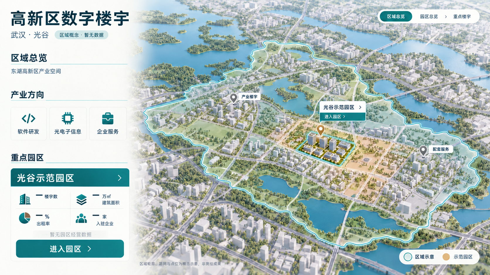
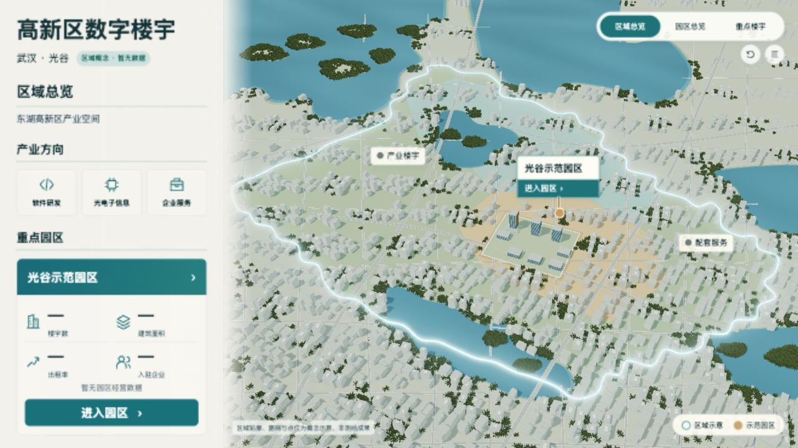

视觉仍待复核。用户已指出v13明显偏离设计，本页不会把工程可运行与用户视觉批准混为一谈。地面轮廓来自概念图控制点，不是真实地理资料。


| ID | 问题 | 源修改 | 本轮判断 | 证据 |
|---|---|---|---|---|
| R-01 | 城市没有铺满，出现矩形地图底板 | 背景地面延伸至视口外，城市覆盖越过画面四边；地面控制点校准后区域占场景宽94.5%、高74.3% | 主要构图已修正 | city-gray-v14b.jpg；city-detailed-v14c.jpg |
| R-02 | 区域边界缺少发光效果 | 同一轮廓的白色核心、青色边线和独立选择性Bloom；地面不参与泛光，避免浅色地面泛白 | 已补效果；光晕强度仍需用户视觉复核 | v14a全场泛白→v14b选择性泛光→v14c阴影层次 |
| R-03 | 示范片区没有对应颜色 | 青绿/浅青色区域及浅金色示范片区铺到地面，示范园区和图钉保持金色强调 | 色区已补，未虚构区域运营数据 | city-no-data-v14c.jpg |
| R-04 | 周边湖泊位置和形态不符 | 参考图地面湖岸控制点反投影、自然样条岸线、浅岸/深水、岛屿、岸边叶簇，增加微波法线与光照反射 | 位置关系和湖岸结构改善；水面材质仍不及设计稿细腻 | city-gray-v14b.jpg；city-no-data-v14c.jpg |
| R-05 | 周边楼群不真实 | 连续成组街区、混合低层/条板/裙房/塔楼、曲线主干道、透明叶簇、接触阴影；周边高度降低以突出园区 | 已改善但未关闭：楼群排布仍有规则重复，建筑细部/景观密度与设计稿仍有差距 | city-detailed-v14a/b/c.jpg |
{
"planningSha256": "f35a355d6afd2e04461d9306902f50552b3f1c4f6cf9c4b2fad9c96b2a022635",
"engineeringResult": "passed",
"visualResult": "needs_review",
"userFeedback": "用户明确否定v13还原质量，不能用工程通过替代视觉验收",
"items": [
{
"id": "R-01",
"issue": "城市没有铺满，出现矩形地图底板",
"change": "背景地面延伸至视口外，城市覆盖越过画面四边；地面控制点校准后区域占场景宽94.5%、高74.3%",
"result": "主要构图已修正",
"evidence": "city-gray-v14b.jpg；city-detailed-v14c.jpg"
},
{
"id": "R-02",
"issue": "区域边界缺少发光效果",
"change": "同一轮廓的白色核心、青色边线和独立选择性Bloom；地面不参与泛光，避免浅色地面泛白",
"result": "已补效果；光晕强度仍需用户视觉复核",
"evidence": "v14a全场泛白→v14b选择性泛光→v14c阴影层次"
},
{
"id": "R-03",
"issue": "示范片区没有对应颜色",
"change": "青绿/浅青色区域及浅金色示范片区铺到地面，示范园区和图钉保持金色强调",
"result": "色区已补，未虚构区域运营数据",
"evidence": "city-no-data-v14c.jpg"
},
{
"id": "R-04",
"issue": "周边湖泊位置和形态不符",
"change": "参考图地面湖岸控制点反投影、自然样条岸线、浅岸/深水、岛屿、岸边叶簇，增加微波法线与光照反射",
"result": "位置关系和湖岸结构改善；水面材质仍不及设计稿细腻",
"evidence": "city-gray-v14b.jpg；city-no-data-v14c.jpg"
},
{
"id": "R-05",
"issue": "周边楼群不真实",
"change": "连续成组街区、混合低层/条板/裙房/塔楼、曲线主干道、透明叶簇、接触阴影；周边高度降低以突出园区",
"result": "已改善但未关闭：楼群排布仍有规则重复，建筑细部/景观密度与设计稿仍有差距",
"evidence": "city-detailed-v14a/b/c.jpg"
}
],
"resources": {
"city": {
"cycles": 6,
"resources": [
34,
28
],
"observedP95Ms": [
17.6,
17.6
]
},
"campus": {
"cycles": 6,
"resources": [
96,
17
],
"observedP95Ms": [
17.0,
17.5
]
},
"building": {
"cycles": 6,
"resources": [
96,
17
],
"observedP95Ms": [
17.0,
17.5
]
}
},
"notCovered": [
"展厅目标硬件",
"长时运行",
"真实地理精度",
"用户最终视觉验收"
],
"imageInputs": {
"design/screens/city-no-data-design-v1.png": "fdfdc01606df25c5d73d072a2851bb14dbf434ee2ab211c32861dcf33fd79300",
"checks/city-detailed-v13-final.jpg": "56d71d35f87bc6778d103c5b5324537fc8e81c3d48c904d631131b3a434225bb",
"checks/city-no-data-v14c.jpg": "0eed469f867842ed2b574956301c4e6eb9fc8172846cff9f131ecf02d6814af7"
}
}